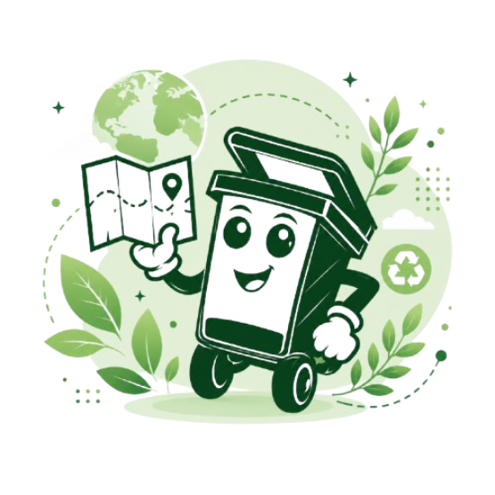
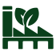
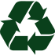
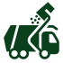
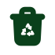
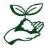
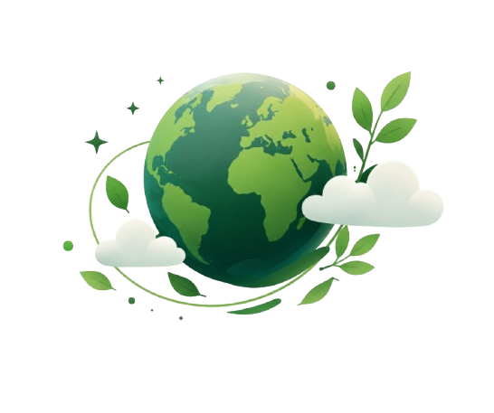

Encuentra tu próximo punto de reciclaje.
Explora los centros de acopio del país que estén cerca a ti, filtra por ubicación y tipo de material, y así puedas tomar acción desde donde sea que estés.

¿Qué buscamos?
Que cada persona que quiera reciclar en Costa Rica no tenga problema en encontrar un centro de acopio con información escasa, sino que contenga toda la información centralizada.
¿Para quién es EcoMap?
EcoMap está dirigido a ciudadanos costarricenses, estudiantes, comunidades y cualquier persona que desee reciclar de forma responsable pero no sabe dónde ni cómo hacerlo cerca de su ubicación.
¿Qué puedes hacer aquí?
El sitio te permite explorar centros de acopio, filtrarlos por tipo de material o ubicación, ver su horario y contacto, y registrar tus hábitos de reciclaje en tu bitácora personal.
Centros por explorar

20+Centros activos
Cantones

13%Residuos reciclados

1.3MToneladas de residuos
¿Qué puedes hacer?
Descubre
Encuentra centros de acopio cerca de ti.

Separa
Lleva tus materiales reciclables por separados.
Recicla
Cada material tiene un nuevo propósito.

Inspira
Sé parte del cambio y motiva a otros.
Pequeñas acciones, grandes cambios.
Únete a todos aquellos que quieren hacer un cambio.
Registra tus hábitos
¿Quiénes somos?
EcoMap es un sitio web creado para brindar la información necesaria acerca de los centros de acopio a tu alrededor y puedan reciclar de forma responsable.